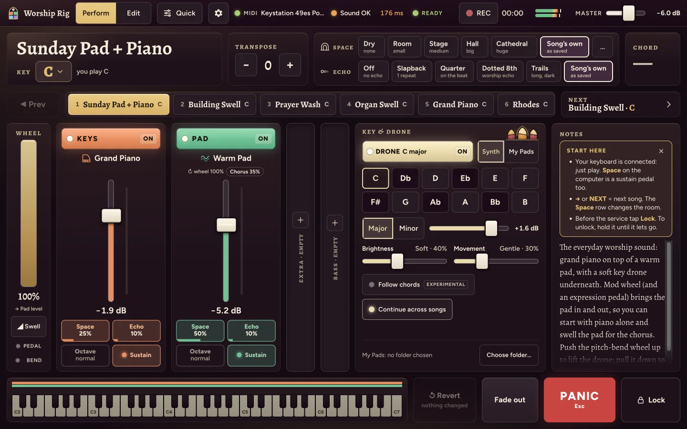
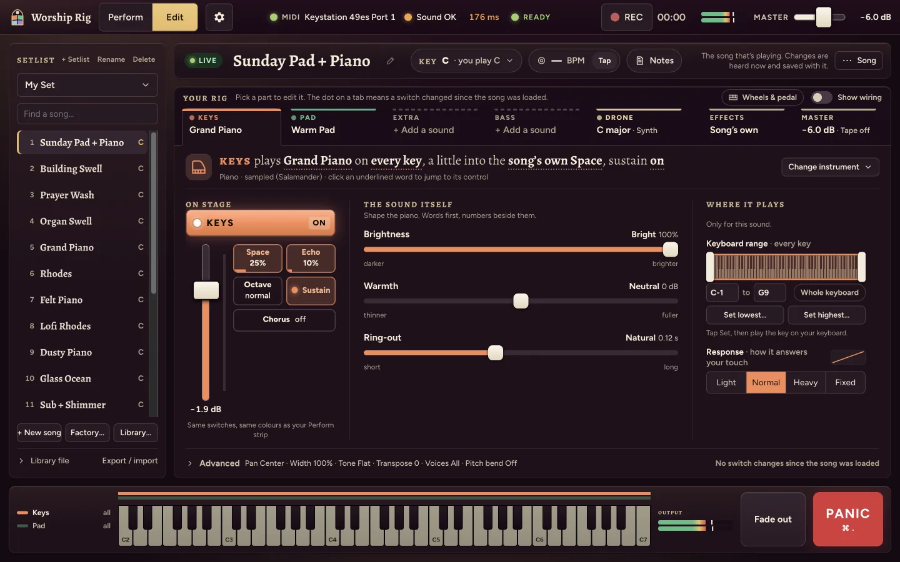
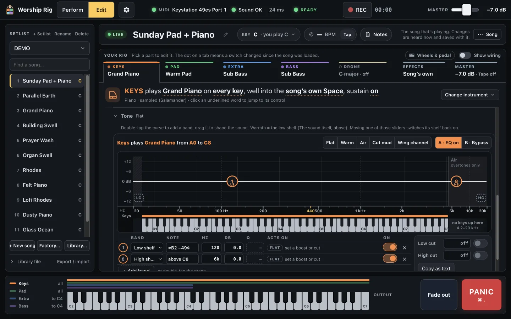
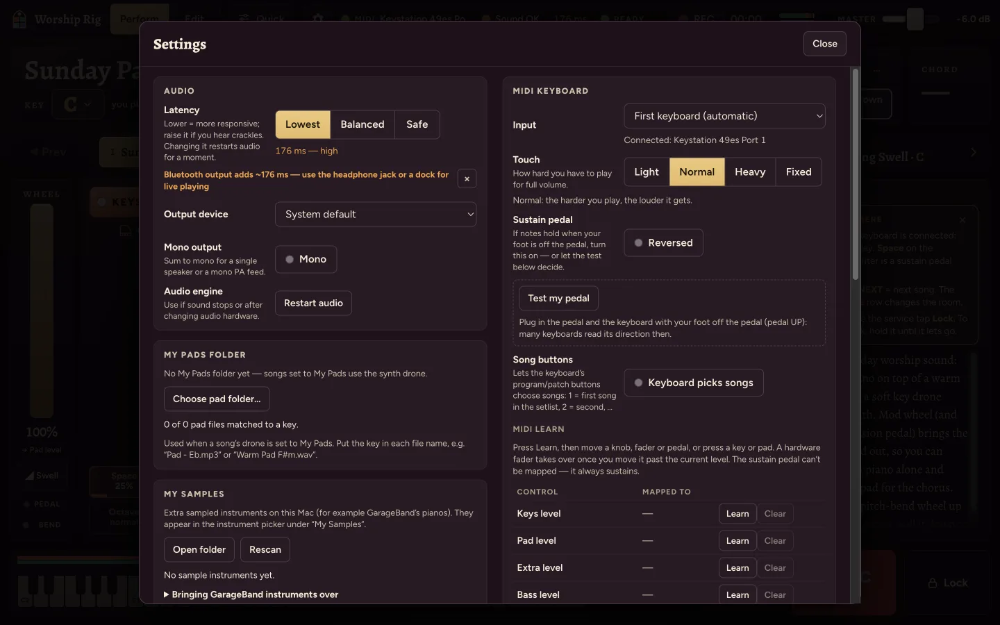
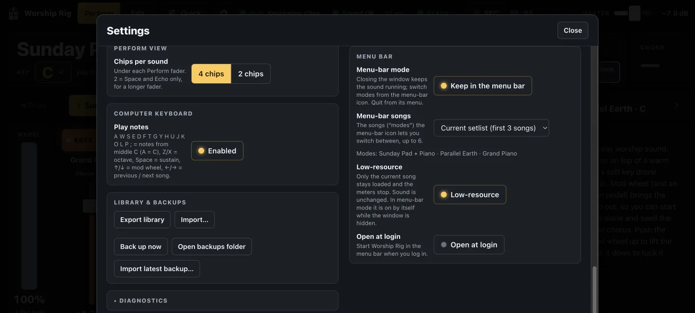

What it does
Plug in a MIDI keyboard, pick a song, play. Everything runs on your Mac.
Four sounds per song
Keys, Pad, Extra and Bass, each with its own level, space, echo and an 8-band EQ laid out over a piano keyboard.
A drone in any key
A soft pad on the root, fifth and octave, with no third, so it sits under major and minor chords. Crossfades on key changes. Or point it at your own pad recordings.
Space and Echo presets
Pick a room from Dry to Cathedral and an echo from Slapback to Dotted Eighth. Tempo-synced echoes follow the song's tempo. The Vibe menu sets both at once.
Setlists without gaps
Step through the service with buttons, arrow keys or a footswitch. Notes you're holding keep ringing on the old sound until you let go; only new notes use the next song.
Menu bar mode and themes
Close the window and keep playing: switch songs, the drone and the master level from the menu bar, with a low-resource setting. The look comes in 7 themes (6 dark, 1 light).
Recording and your own sounds
REC writes a 16-bit stereo WAV to Music › Worship Rig as you play. My Samples plays instruments you convert from GarageBand or Logic, for your own use.
Screenshots: current build
Classic theme. The final look is still being chosen, so these will be replaced.






What's in the box
- 23 sampled instruments (79.2 MB): grand and upright piano, electric pianos, clavinet, mallets, bells, guitars, harp and more. Licences and changes are in LICENSES.md.
- 16 synth patches (pads, keys, brass, leads, basses; synth.js, synth-extra.js) and an additive drawbar organ with 4 presets and a rotary speaker (organ.js). These are generated in code.
- 19 factory songs in five groups (Worship, Keys, Lofi, Ambient, Synth), each with a note on what it's for, and a first setlist holding all of them (presets.js, README).
- Effect presets: 6 Spaces, 5 Echoes and 6 Vibes (fx-presets.js).
- No Apple content ships. GarageBand and Logic sounds are only ever converted on your own Mac.
- Starter library: a ready-made backup file you can import is coming with the next update. For now, see how songs are exported and imported in the README.
Sample credits
Salamander Grand Piano V3 by Alexander Holm, licensed under a Creative Commons Attribution 3.0 Unported License (https://creativecommons.org/licenses/by/3.0/).
Source: https://github.com/sfzinstruments/SalamanderGrandPiano
Upright Piano from VS Chamber Orchestra 2: Community Edition by Versilian Studios (Sam Gossner) and Simon Dalzell (Ivy Audio), CC0 1.0. http://vis.versilstudios.net/vsco-community.html
Musyng Kite soundfont samples, rendered to MP3 by gleitz/midi-js-soundfonts (https://github.com/gleitz/midi-js-soundfonts), licensed under CC BY-SA 3.0 (https://creativecommons.org/licenses/by-sa/3.0/). Modified by the Worship Rig project as described below.
"Below" refers to the modifications listed in LICENSES.md.
Install
- Open the
.dmgand drag Worship Rig to Applications. (Apple Silicon:arm64. Intel:x64.) - First launch. The app isn't notarized by Apple, so macOS says it "could not verify" it. On
macOS 15 and later, right-click › Open no longer gets past this. Click Done, then open
System Settings › Privacy & Security, scroll to "Worship Rig" was blocked and
click Open Anyway. Or run this once in Terminal:
xattr -dr com.apple.quarantine "/Applications/Worship Rig.app" - MIDI. macOS usually doesn't ask about a USB keyboard. If it does ask, allow it.
- Keyboard. Plug it in before or after opening the app. If the MIDI light on the Perform screen stays off, pick your keyboard in Settings › MIDI keyboard › Input.
- Output. Use the headphone jack or an audio interface, not Bluetooth. Bluetooth output measured 176 ms of delay here, against 20 ms on a USB-C dock (hardware check).
Full steps: README › Running on your Mac.
Requirements
- macOS
- 12 or later (package.json,
LSMinimumSystemVersion) - Mac
- Apple Silicon or Intel (separate downloads)
- Disk
- about 370 MB for the installed app (366 MB arm64, 372 MB x64, measured)
- Keyboard
- MIDI keyboard optional: the computer keys play notes too (A W S E D F … for C4 up to E5, Space for sustain)
GarageBand and Logic sounds
If GarageBand or Logic is installed, a small command-line tool converts their sampled instruments (grand pianos, strings, choirs and more) into your My Samples folder, and they appear in the instrument picker. Those sounds are Apple's and licensed to you for personal use only: they stay on your Mac, and Worship Rig never copies them into the app, uploads them or shares them. Step by step: docs/garageband-import.md.
Privacy
Worship Rig makes no network calls of its own and has no telemetry or analytics. Songs, settings, recordings and
sounds stay on your Mac. The app talks only to its own small web server, which listens on
127.0.0.1 and nowhere else: see
server.js. It never opens the microphone.